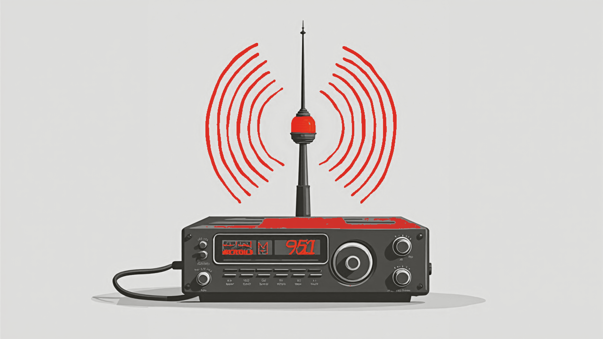
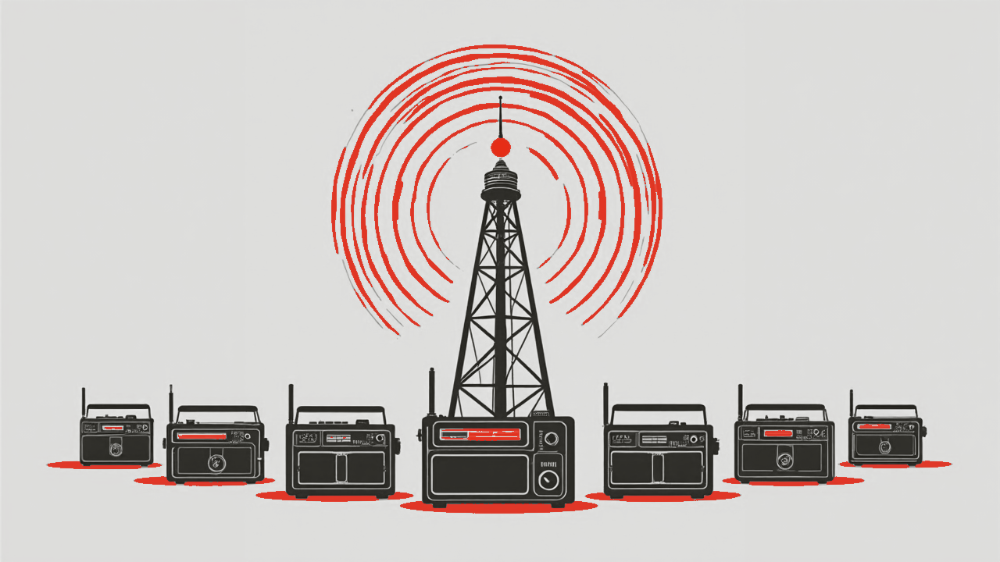

How to share your GPU for AI - and earn
That idle GPU can answer for the whole band. Here is how to put it on the air with one command, what you can earn, and why it is safe to do.

Quick answer. Run roger share and your machine's local model goes on the
air as an AI node. It's free with no login by default; set a price (dollars per million
tokens) to earn instead - you keep 70%, paid out through Stripe. The connection is
outbound-only, and every prompt is moderated before it ever reaches you.
Most GPUs sit idle most of the day. RogerAI lets you lend that idle time to people who need a model you can already run - as a free contribution to the open band, or priced so the capacity earns while you sleep. It takes one command and does not open your machine to the internet.
How do I share my GPU?
One command: roger share. It auto-detects your local, OpenAI-compatible
model server - Ollama, LM Studio, llama.cpp, vLLM, Jan, LiteLLM, or anything serving
/v1/models - and puts that model on the air. Bare roger share is
free and needs no account. First time out:
roger onboard --freethenroger share- the guided start.roger share gpt-oss-120b- put a specific model on the air.- Your node gets an anonymous callsign (like
brave-otter) - never your hostname or port.
How does sharing actually work?
Your machine dials out to the broker - "the band" - and waits for work. It never opens an inbound port. The broker screens each prompt, matches it to a listener, and hands it to your model; you answer locally and return a signed receipt.
How much can I earn?
You set two prices - input and output, in dollars per million tokens
(--price-in, --price-out). The default is 0/0, which is
free. The earn wizard suggests $0.20 in / $0.30 out per million to start. You keep
70% of what your node bills; the rest is the platform's cut. Price against live
rates for your model on the model directory so you stay
competitive - and roger onboard --earn walks you through pricing and login.

Is it safe to share my GPU?
Yes, by design. The connection is outbound-only: no inbound ports, no public URL, no shell, no file access, no context - the bridge exposes only your model's port. Your upstream API key never leaves the machine (it's stripped from anything relayed back). Every request is moderated by the broker before it reaches you, so illegal content is blocked upstream and never touches your GPU. Your node signs every receipt with a local key, and your callsign is anonymous - your hostname and location stay private.
How and when do I get paid?
Earning takes a one-time roger login (GitHub). Payouts run on Stripe
Connect - Stripe handles identity verification and pays to your bank; RogerAI never
stores your documents. Earnings accrue as you serve, then release under a simple policy:
$25 minimum, a 120-day hold (it covers the chargeback window), paid out
monthly. Manage it with roger payout status,
roger payout request, and friends - full details on the
payouts page. Earnings even accrue before your verification
clears; you just can't withdraw until it does.
Should I share for free or to earn?
Both are one command apart. Free (roger share, no login) is the
fastest way to add capacity to the open band and help the community - perfect for spare
cycles. Earn (set a price, log in) turns idle time into income. You don't have to
choose forever: a paid node can still broadcast free during a daily
--free-window or on a schedule, and roger share --private keeps
a node off the public market, reachable only by a secret code. The full command reference
is in the operating manual.
Frequently asked questions
- Do I need a GPU to share?
- You need a machine running a local OpenAI-compatible model server (Ollama, LM Studio, llama.cpp, vLLM, and others). A GPU is what makes it fast and worth sharing; the model server is the actual requirement.
- Is sharing my GPU free, or do I earn?
- Your choice. The default is free and needs no login. Set a price (dollars per million tokens, input and output) to earn instead - you keep 70%.
- How much can I earn sharing my GPU?
- You set the price, so it depends on your rate, how in-demand your model is, and your uptime. The earn wizard suggests $0.20 in / $0.30 out per million tokens to start, and you keep 70% of what your node bills.
- Is it safe to let strangers use my GPU?
- Yes. The connection is outbound-only - no inbound ports, no shell, no file access - and exposes only your model's port. Every prompt is moderated by the broker before it reaches you, your API key never leaves your machine, and your callsign is anonymous.
- When do I get paid?
- Payouts run on Stripe Connect with a $25 minimum, a 120-day hold, and monthly release. Earning requires a one-time GitHub login and Stripe identity verification; earnings accrue in the meantime.
- Can I stop sharing anytime?
- Yes - just stop
roger share. If you restart, your node comes back under the same anonymous callsign, and shares survive broker restarts automatically.
curl -fsSL https://rogerai.fyi/install.sh | sh